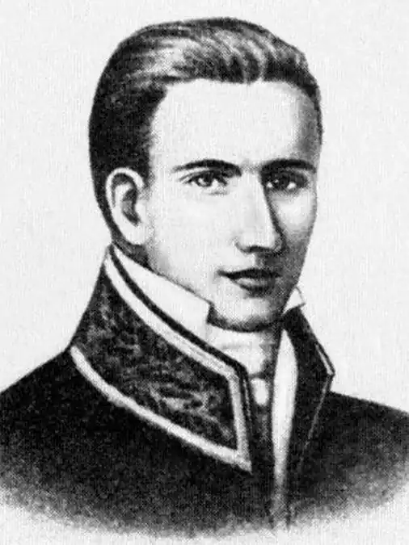

Левко Боровиковський – український поет доби романтизму. Він виступав у жанрах романтичної лірики, літературної балади, байки-гуморески. Творчість Боровиковського високо поціновували інші вітчизняні літератори та використовували як джерело натхнення.
Левко Іванович народився 22 лютого 1806 року в невеличкому селі на Полтавщині. Родина Боровиковських походила зі старовинного козацького роду. Дід був миргородським іконописцем. Дядько – відомий художник Володимир Боровиковсьий. Батько хлопця теж гарно малював, тому односельці прозвали їх Маляренками, а їхнє подвір'я – Маляренківщиною.
Читати та писати навчився дома, потім навчався в місцевому повітовому училищі та Полтавській гімназії. Саме там хлопець захопився літературою. У 1826-му Левко став студентом Харківського інституту, вступивши на філологічний факультет. Вивчав латину, французьку та польську мови, а також історію і географію. Чималий вплив на Боровиковського мав Петро Гулак-Артемовський. Саме він спонукав студента почати збирати український фольклор, матеріяли для українського словника (йому він присвятив багато років, на жаль, так і не завершивши роботу) та навіть писати власні твори. У 1828 році на шпальтах журналу "Вѣстникъ Европы" з'явилася поема Левка "Пир Володимира Великого". Тоді ж була написана балада про відважного козака "Смерть Пушкаря". Відтоді жанр ліро-епічної поезії фантастичного, історико-героїчного характеру з драматичним сюжетом стали основним напрямком поетичної творчості літератора. До речі, свої перші твори Левко писав російською, та невдовзі перейшов на рідну мову, саме ці роботи знайшли відгук у серцях українців. За роки студіювання були написані "Гайдамаки", "Бандурист", "Ледащо", тоді ж перекладав Горація. Його адаптація набула милозвучності української пісні. Окрім того, переклав Міцкевича та Пушкіна. В інституті заприязнився з Ізмаїлом Срезневським (син професора Івана Срезневського). Ізмаїл створив гурток поетів-романтиків. Очолив студентське зібрання викладач Гулак-Артемовський. До нього увійшов і Левко. Саме тоді Боровиковський вирішив довести, що "мненіє ложно, якоби язик малоросійський способен только для виражения смішного и низкого". Пізніше висловлювання Левка розібрали на афоризми. По завершенню навчання отримав ступінь "кандидата за отличие" та отримав призначення в Курську гімназію. Шість років пропрацював викладачем історії, латини, завідував бібліотечним відділенням. Там Левко Іванович виступав за поширення освіти для бідного населення. Окрім того, не покидав і пера. Написав чимало нових творів, підготував до випуску збірку віршів. У 1831-му Срезневський готував до видачі альманах творів українських письменників. Боровиковського також запросили долучитися до цього видання. Левко відправив сім своїх робіт, із яких відібрали та опублікували одну баладу "Козак". Євген Гребінка схвально оцінив її. Восени 1837-го Боровиковсьго перевели до Новочеркаської гімназії. Відомо, що в цей період було написано кілька віршів, які не були надруковані за життя поета. Оце й усі відомості того часу. За рік Левко Боровиковський переїхав до Полтави, влаштувався до гімназії й викладав латину. Невдовзі він отримав місце в Полтавському дівочому інституті. Тоді ж там працював і Гулак-Артемовський. Обидва поети часто обговорювали нагальні питання літературного та творчого життя. Левко продовжував збирати фольклор, писав байки, балади. На початок 1839-го у творчому доробку літератора було вже понад 600 байок (до нас дійшли лише 195), але друкувати їх було ніде. Журнал "Вѣстникъ Европы" закрили, за ним перестав виходити "Украинский вестник". Лише за рік в "Отечественных записках" було опубліковано кілька праць Боровиковського. У 1841-му в Петербурзі Євген Гребінка видав альманах "Ластівка". Поряд із творами Тараса Шевченка та Івана Котляревського були опубліковані праці Боровиковського – поезії "Волох", "Розставання", "Чорноморець", "Палій", "Зимній вечір", а ще одинадцять байок і понад сто прислів'їв і загадок. Левко Іванович також писав прозу, на жаль, ці твори втрачені. Байкам пощастило більше, ще за життя літератора їх знали, неодноразово друкували. Чимало висловів із його робіт стали народним фольклором, зокрема: "Найлучча птиця – ковбаса!", "Хто сам собі дає зарік – пропащий чоловік", "Сова хоть спить, та кури бачить", "Мор, голод і війна – то страшні людоїди, а ще страшніші – злі сусіди" та інш. Коли поетові виповнилося 35 років, він одружився, і це мало вплив на його літературну працю – вона пішла на спад. Невдовзі Боровиковський обійняв посаду інспектора Полтавської гімназії. А згодом родину спіткало горе – Левко Іванович став страждати психічними розладами. З кожним роком ситуація погіршувалася, психічна хвороба прогресувала. У зв'язку з цим йому довелося піти у відставку. Поїхав до рідного села, з листів, які він писав знайомим, видно, що жилося йому тяжко. Зокрема листи-прохання про збільшення пенсії для утримання дітей та дружини. У 1876 році до оселі Боровиковського завітав Олександр Кониський. Він запросив Левка Івановича взяти участь у виданні збірки українських письменників. Поет з радістю став до праці. Написав кілька робіт і відправив Кониському. Та цензура заборонила випуск збірки. Його твори так і лишилися в столі. Він ще довго намагався опублікувати свої праці, але навіть петербурзькі видавці не бралися за цю роботу. Марно мріяв поет побачити за життя свої байки у друковану варіанті. Мрії так і лишилися ними. 26 грудня 1889 року Левко Боровиковський помер. Похований недалеко від садиби. Могилу розшукали хорольські учні під керівництвом учителя-краєзнавця Ходосова. У 1961 році на могилі встановили цегляний обеліск. У 1986-му його замінили мармуровим пам'ятником.